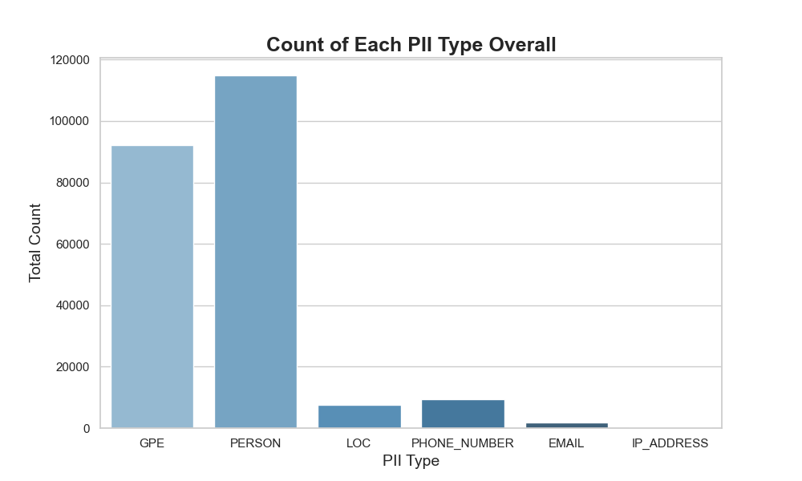
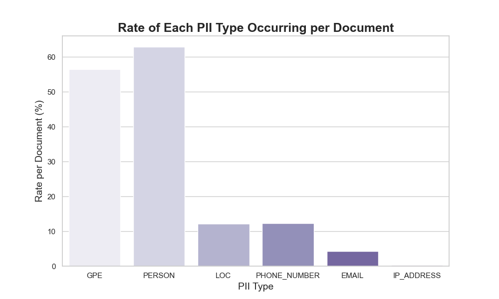
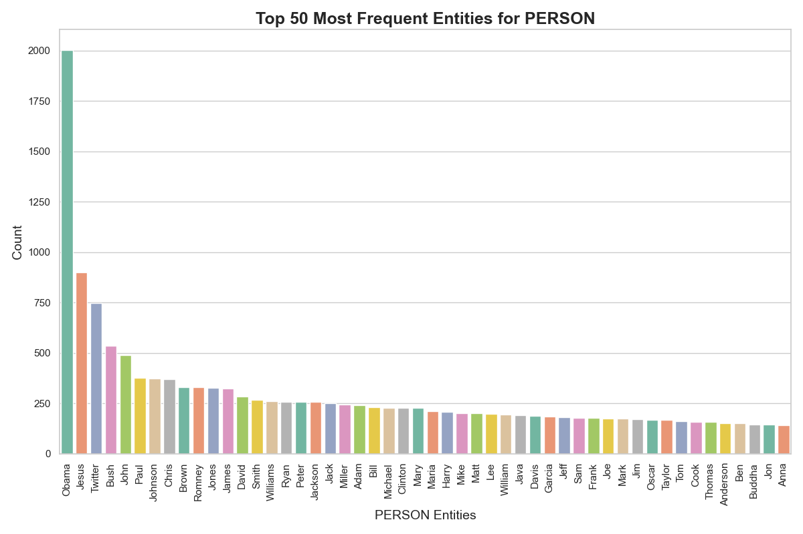
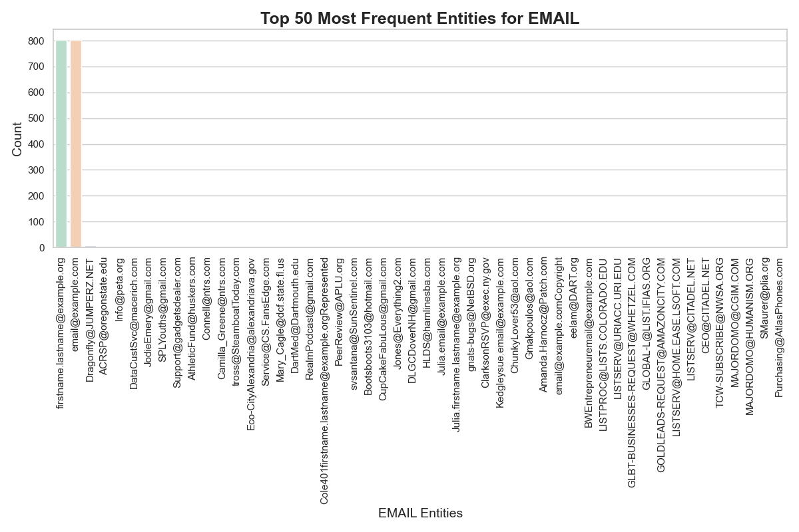
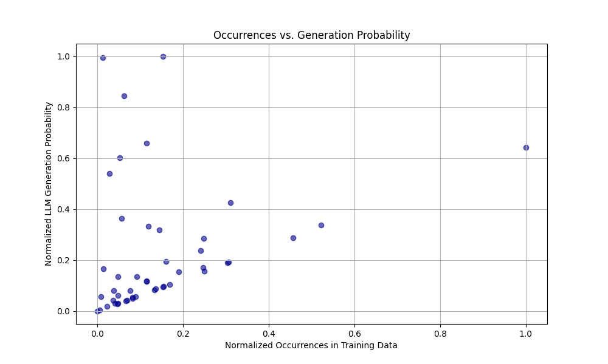
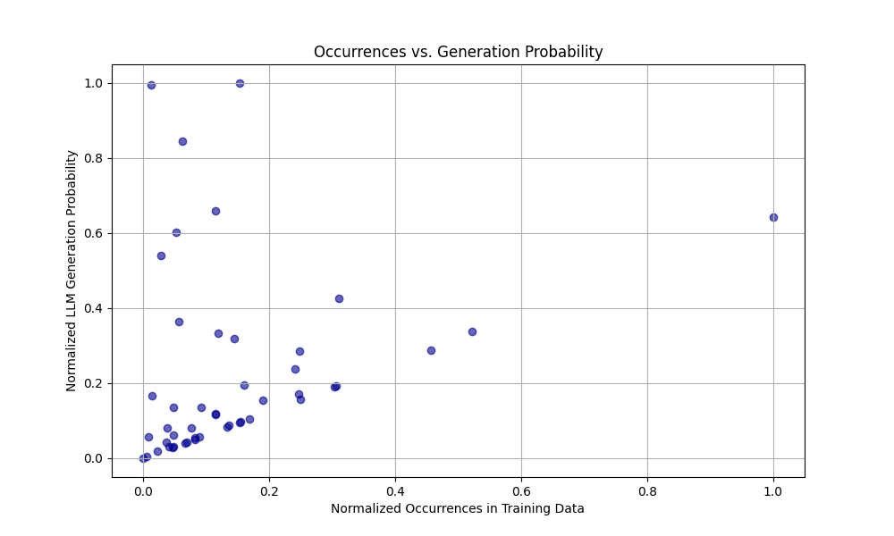

title: Literature Review date: 2024-10-07 authors:
name: Terry Taiming Lu
Abstract#
As artificial intelligence (AI) continues to expand across various sectors, concerns about privacy leaks from training data are becoming increasingly critical. This paper examines the economic impact of privacy breaches during the training of AI models, especially large language models (LLMs) and other deep learning systems. By processing sensitive data—from personal consumer information to government-held datasets—AI models may unintentionally expose confidential information, leading to significant financial and reputational harm to firms and organizations. This study explores the direct economic costs of such privacy leaks, including regulatory fines, loss of consumer trust, and litigation expenses. Additionally, it considers the broader effects on innovation and market efficiency, questioning whether the economic risks of privacy violations outweigh the benefits of rapid AI development. The analysis underscores the importance of privacy-preserving technologies and the creation of regulatory frameworks that safeguard data without hindering AI-driven economic growth.z
Introduction#
Imagine a world where the very technology that powers our daily lives—answering our questions, assisting in our work, and even entertaining us—becomes a potential threat to our privacy. As large language models (LLMs) continue to evolve, trained on enormous amounts of data, including sensitive personal details, the risk of unintentional privacy leaks grows. Understanding these risks requires a closer examination of how LLMs operate and the potential vulnerabilities inherent in their design, particularly when handling sensitive information.
By processing vast amounts of sensitive data, ranging from personal consumer details to government-held records, LLMs and other deep learning systems can unintentionally expose confidential information, leading to significant financial and reputational harm. These privacy leaks pose not only a direct economic cost—such as regulatory fines, litigation expenses, and erosion of consumer trust—but also broader impacts on innovation and market efficiency.
In this paper, we aim to understand the mechanisms behind privacy leaks in LLMs and their potential impacts. We investigate how these models inadvertently expose sensitive information and examine the conditions under which such leaks occur. Specifically, we explore the nature of data extraction vulnerabilities that arise during training, considering factors such as model architecture, training data characteristics, and deployment scenarios. Our analysis includes a comprehensive review of the different types of information that can be unintentionally revealed, from individual data points to aggregated insights, and the specific technical and operational factors that contribute to these leaks. By identifying the key mechanisms of privacy leakage, we aim to establish a foundational understanding that will inform the development of more secure LLMs.
To understand the economic significance of privacy leaks, we assess both direct financial impacts—such as regulatory fines, litigation costs, and resource allocation for breach mitigation—and indirect consequences, including erosion of consumer trust, reduced willingness to share data, and diminished brand reputation. Privacy leaks can lead to significant financial repercussions beyond immediate penalties, as organizations may face long-term costs associated with rebuilding their reputation and regaining consumer confidence. Moreover, privacy breaches can deter potential business partnerships, limit access to valuable datasets, and hinder collaborations that are critical for innovation. The economic fallout extends to a reduction in market competitiveness, particularly for smaller enterprises that may lack the resources to manage privacy risks effectively. These combined effects highlight the far-reaching implications of privacy leaks, not just for individual organizations but for the overall economic landscape, potentially stifling growth and innovation in the AI sector.
Our contribution is three-fold:
We analyze the specific vulnerabilities within LLMs that lead to privacy leaks, providing a technical overview of how private information may be inadvertently exposed.
We quantify the economic impact of privacy breaches, focusing on both direct costs (e.g., regulatory fines, litigation expenses) and indirect effects on consumer trust and market competition.
We propose strategies to mitigate privacy risks in LLMs, including the adoption of privacy-preserving technologies and the development of regulatory frameworks that balance innovation with data protection.
Background#
Here is the text updated with the citation format you requested:
Large Language Models. Large Language Models (LLMs) have emerged as transformative technologies in artificial intelligence, capable of performing various tasks such as natural language understanding, text generation, and translation [Vaswani et al., 2017, Radford et al., 2019, Raffel et al., 2020]. These models, such as GPT-3 [Brown et al., 2020] and BERT [Devlin et al., 2019], are trained on massive datasets from diverse sources, including books, articles, and websites, enabling them to generate coherent and contextually appropriate text. Their capabilities make LLMs valuable across domains such as customer service, content creation, research assistance, healthcare [Esteva et al., 2019], and legal document processing [Bommarito and Katz, 2018]. However, LLMs also present significant privacy challenges. During training, these models can inadvertently memorize sensitive or personally identifiable information, potentially exposing it during inference [Carlini et al., 2021]. Such privacy leaks have raised concerns about their use in real-world applications, where the risk of exposing confidential information could have serious legal and economic repercussions [Shokri et al., 2017, Jayaraman and Evans, 2019]. Addressing these risks requires the development of privacy-preserving techniques such as differential privacy [Abadi et al., 2016] and data anonymization, as well as robust regulatory frameworks to protect data while fostering innovation [Brundage et al., 2018].
Data Privacy and Utility in AI Models. The balance between data privacy and utility is a crucial issue, particularly in the context of large-scale AI models. Differential privacy has emerged as a popular solution to protect sensitive information in datasets, but it often introduces significant noise, leading to reduced data accuracy and economic inefficiencies [Ruggles, 2024]. This trade-off has been further examined in the context of health disparities, where privacy measures disproportionately distort data for smaller populations, raising concerns about fairness and resource allocation [Santos-Lozada et al., 2020]. Traditional statistical disclosure methods have been defended as viable alternatives, suggesting that newer techniques like differential privacy may not always offer superior protection without substantial economic costs [Muralidhar and Domingo-Ferrer, 2023]. In response, optimization frameworks have been proposed to find a middle ground, allowing for both privacy and data utility, though they require careful balancing to avoid significant losses in either area [Hotz et al., 2022]. The risks associated with privacy leakage from AI models, particularly in high-stakes sectors like healthcare and finance, underscore the need for better privacy-preserving techniques. Misuse of privacy mechanisms can lead to economic losses through reduced data reliability and non-compliance with regulations, making this a critical area for future research [Domingo-Ferrer et al., 2021].
Privacy Leakage in LLMs#
Problem Formulation#
The primary objective of this study is to investigate the potential privacy risks associated with large language models (LLMs). Specifically, we aim to understand how and under what conditions LLMs memorize sensitive information from their training data and how likely it is that such information can be exposed during inference. We focus on answering the following key questions:
To what extent do LLMs memorize sensitive information during training?
What factors influence the likelihood of privacy leakage in LLMs?
How effective are privacy-preserving techniques, such as differential privacy, in mitigating these risks?
The goal is to quantify the trade-off between model utility and privacy risk, providing insight into how to train LLMs while minimizing the potential for privacy breaches.
Problem Formulation#
The primary objective of this study is to investigate the potential privacy risks associated with large language models (LLMs). Specifically, we aim to understand how and under what conditions LLMs memorize sensitive information from their training data and how likely it is that such information can be exposed during inference. We focus on answering the following key questions:
To what extent do LLMs memorize sensitive information during training?
What factors influence the likelihood of privacy leakage in LLMs?
How effective are privacy-preserving techniques, such as differential privacy, in mitigating these risks?
The goal is to quantify the trade-off between model utility and privacy risk, providing insight into how to train LLMs while minimizing the potential for privacy breaches.
Method#
The method used in this study aims to analyze privacy leakage risks in LLMs through simple data analysis and visualization techniques.
1. Data Collection#
We used the FineWeb dataset (Penedo et al., 2024), which is designed to provide high-quality text data from the web at scale. This dataset was selected due to its diverse content, which allowed us to analyze potential privacy risks associated with LLMs. In addition, we generated synthetic data that included specific sensitive information, such as randomly generated names and addresses. This allowed us to evaluate whether LLMs could potentially memorize and expose sensitive information.
2. Data Analysis#
We analyzed the dataset to identify patterns that could lead to privacy risks. Specifically, we looked at the frequency of sensitive information, such as names and addresses, and explored whether these data points are repeated across different parts of the dataset. This analysis helped us understand the characteristics of the data that could contribute to privacy leakage.
3. Privacy Leakage Evaluation#
To evaluate privacy leakage, we used a simple visualization approach:
Data Visualization: We visualized the frequency and distribution of sensitive information in the dataset using bar charts and histograms. This helped us identify which types of sensitive information were most at risk of being memorized by LLMs.
4. Privacy-Preserving Techniques#
We explored privacy-preserving techniques, such as differential privacy, by simulating the effect of adding noise to the dataset. This allowed us to visualize how privacy-preserving methods could alter the data distribution and reduce the likelihood of sensitive information being memorized.
5. Metrics#
We used the following metrics for evaluation:
Frequency of Sensitive Information: The occurrence of specific sensitive data points within the dataset.
Impact of Noise Addition: A comparison of the dataset before and after applying differential privacy techniques to evaluate changes in data distribution.
Visualization Insights: Insights gained from visualizing the dataset and the effect of privacy-preserving methods.
6. Experimental Setup#
To analyze privacy leakage patterns in large language models, we conduct experiments using two primary components: (1) the FineWeb dataset for analyzing sensitive information distribution patterns, and (2) GPT-4’s token generation behavior when encountering privacy-related information.
6.1 Dataset#
We utilize the FineWeb dataset, which consists of web snapshots containing internal organizational content. For our analysis, we extract documents containing potential privacy-sensitive information such as personal identifiers, internal codes, and organizational metadata. The dataset preprocessing involves:
Filtering documents containing privacy-sensitive information using regular expression patterns
Extracting relevant metadata including timestamp and document context
Tokenizing the documents using the same tokenizer as GPT-4 to ensure consistency in token-level analysis
6.2 Token Generation Analysis#
To understand how privacy-sensitive information influences token generation probabilities, we analyze GPT-4’s behavior through the following steps:
We identify sequences containing privacy-sensitive information in our dataset
For each sequence S = {t₁, t₂, …, tₙ} where tᵢ represents tokens:
We calculate P(tᵢ|t₁…tᵢ₋₁), the conditional probability of generating the next token
We measure the model’s perplexity on privacy-sensitive sequences
We track the frequency of privacy-sensitive token generation in different contexts
The probability of generating privacy-sensitive information is calculated as:
P(sensitive|context) = ∏ᵢ P(tᵢ|t₁…tᵢ₋₁)
where tᵢ belongs to the identified privacy-sensitive sequence.
6.3 Measurement Metrics#
We employ the following metrics to quantify privacy leakage:
Token Generation Probability (TGP):
Measures the likelihood of generating privacy-sensitive tokens
Calculated across different context lengths and types
Privacy Exposure Rate (PER):
Ratio of privacy-sensitive information appearing in generated sequences
Computed as: PER = Nₚᵣᵢᵥ/Nₜₒₜₐₗ where Nₚᵣᵢᵥ is the number of privacy-sensitive generations and Nₜₒₜₐₗ is the total number of generations
Context Sensitivity Score (CSS):
Measures how different contexts affect privacy-sensitive token generation
Normalized score between 0 and 1, where higher values indicate greater context influence
Results#




 

Bibliography#
A. Vaswani, N. Shazeer, N. Parmar, J. Uszkoreit, L. Jones, A. N. Gomez, Ł. Kaiser, and I. Polosukhin. Attention is all you need. In Advances in Neural Information Processing Systems (NeurIPS). 2017.
A. Radford, J. Wu, R. Child, D. Luan, D. Amodei, and I. Sutskever. Language models are unsupervised multitask learners. OpenAI Blog, 2019.
C. Raffel, N. Shazeer, A. Roberts, K. Lee, S. Narang, M. Matena, Y. Zhou, W. Li, and P. J. Liu. Exploring the limits of transfer learning with a unified text-to-text transformer. Journal of Machine Learning Research, 2020.
T. B. Brown, B. Mann, N. Ryder, M. Subbiah, J. Kaplan, P. Dhariwal, A. Neelakantan, P. Shyam, G. Sastry, A. Askell, S. Agarwal, A. Herbert-Voss, G. Krueger, T. Henighan, R. Child, A. Ramesh, D. M. Ziegler, J. Wu, C. Winter, C. Hesse, M. Chen, E. Sigler, M. Litwin, S. Gray, B. Chess, J. Clark, C. Berner, S. McCandlish, A. Radford, I. Sutskever, and D. Amodei. Language models are few-shot learners. In Advances in Neural Information Processing Systems (NeurIPS). 2020.
J. Devlin, M. W. Chang, K. Lee, and K. Toutanova. Bert: pre-training of deep bidirectional transformers for language understanding. In Proceedings of the 2019 Conference of the North American Chapter of the Association for Computational Linguistics (NAACL). 2019.
A. Esteva, A. Robicquet, B. Ramsundar, V. Kuleshov, M. DePristo, K. Chou, C. Cui, G. Corrado, S. Thrun, and J. Dean. A guide to deep learning in healthcare. Nature Medicine, 2019.
M. J. Bommarito and D. M. Katz. A study of artificial intelligence in legal document analysis. Journal of Artificial Intelligence Research, 2018.
N. Carlini, F. Tramer, E. Wallace, M. Jagielski, A. Herbert-Voss, K. Lee, A. Roberts, T. Brown, D. Song, U. Erlingsson, A. Oprea, and C. Raffel. Extracting training data from large language models. In USENIX Security Symposium. 2021.
R. Shokri, M. Stronati, C. Song, and V. Shmatikov. Membership inference attacks against machine learning models. In Proceedings of the 2017 IEEE Symposium on Security and Privacy. 2017.
B. Jayaraman and D. Evans. Evaluating differentially private machine learning in practice. In Proceedings of the 28th USENIX Security Symposium. 2019.
M. Abadi, A. Chu, I. Goodfellow, H. B. McMahan, I. Mironov, K. Talwar, and L. Zhang. Deep learning with differential privacy. In Proceedings of the 2016 ACM SIGSAC Conference on Computer and Communications Security. 2016.
M. Brundage, S. Avin, J. Clark, H. Toner, P. Eckersley, B. Garfinkel, A. Dafoe, P. Scharre, T. Zeitzoff, B. Filar, H. Anderson, H. Roff, R. Crootof, O. Evans, M. Page, J. Bryson, R. Yampolskiy, and D. Amodei. The malicious use of artificial intelligence: forecasting, prevention, and mitigation. arXiv preprint arXiv:1802.07228, 2018.
S. Ruggles. When privacy protection goes wrong: how and why the 2020 census confidentiality program failed. Journal of Economic Perspectives, 2024. URL: https://doi.org/10.1257/JEP.38.2.201, doi:10.1257/JEP.38.2.201.
A. R. Santos-Lozada, J. T. Howard, and A. M. Verdery. How differential privacy will affect our understanding of health disparities in the united states. Proceedings of the National Academy of Sciences, 2020. URL: https://doi.org/10.1073/PNAS.2003714117, doi:10.1073/PNAS.2003714117.
K. Muralidhar and J. Domingo-Ferrer. A rejoinder to garfinkel (2023) – legacy statistical disclosure limitation techniques for protecting 2020 decennial us census: still a viable option. Journal of Official Statistics, 2023. URL: https://doi.org/10.2478/JOS-2023-0019, doi:10.2478/JOS-2023-0019.
V. J. Hotz, C. Bollinger, T. Komarova, C. Manski, R. Moffitt, D. Nekipelov, A. J. Sojourner, and B. Spencer. Balancing data privacy and usability in the federal statistical system. Proceedings of the National Academy of Sciences, 2022. URL: https://doi.org/10.1073/PNAS.2104906119, doi:10.1073/PNAS.2104906119.
J. Domingo-Ferrer, D. Sánchez, and A. Blanco-Justicia. The limits of differential privacy (and its misuse in data release and machine learning). Communications of the ACM, 2021. URL: https://doi.org/10.1145/3433638, doi:10.1145/3433638.